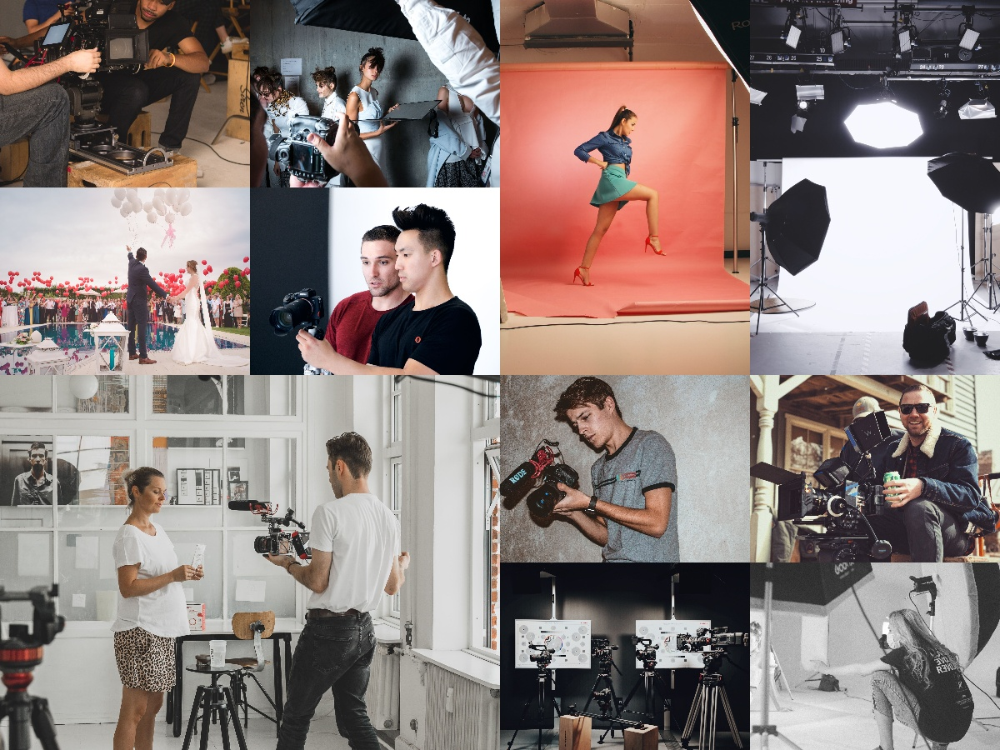

Make Memories ‐ not Photographs
Hello, we're I'm Photographer your new premium Photo-shoot specialist. we know you always love to preserve your special movements spend with your near and dear one's. Special occasions like Birthdays, pre-wedding, wedding, post-wedding, Family shoots and many other occasions are taken special care by our team. Our Skilled photographers caption moments as if they were theirs with more affection and care and we are Proud of them.As they know how important a movement can be for an individual and it is their work that is going to last for decades to come. Where many generations will look at those captured memories of their parents and grandparents and will cherish them. We use Quality Equipments for capturing and make sure that the photographs are developed with accuracy. So let us take care of that, we’re really good at it, we promise!
Up to 365 days/year
Never wait again! We really mean that. Our subscription plans include up to 365 days/year coverage. You can also choose more flexibly if that's your style.
Ready in 20 minutes
You're only twenty minutes away from your prefect picture which may be required for Resume or for your child to get admission into the schools. We work hard to ensure that you're 100% happy.
100% original
All our photographs are professional and original.They also provide editing if necessary to give you a perfect look. The elements or chemical used to develop the photographs are Good for your health and the environment!
Customize anything
We don't limit your creativity, which means you can demand whatever you feel like. You can also choose from our services or customize your demand. It's up to you!
We Not Only Make Memories But Also Train You To CREATE YOUR OWN
